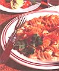

NATURAL KITCHEN
Though early April, it's somehow managed to be shivery cold out, the sky's darkening, and spring seems to have missed us completely. I grab a woolly blanket, and muse over the hot, comforting food choices that my family is sure to demand upon tromping in the front door. It's days like these that we're not really in the mood for what my son refers to as "weird healthy stuff"; just bring on the home cooking like Grandma used to make. You know-the no-frills food that sticks to your ribs such as stews, pot roasts, or rice pudding. Of course what's comforting to one person may not satisfy another. Some of us remember our all-time favorites, such as tapioca pudding or Mom's apple pie. Call my husband strange (and I sometimes do), but he actually looks forward to bleak days so he can skid home and eat roast chicken with gravy-soaked mashed potatoes and steamed baby carrots. So I decided that it might be possible to enter the comfort zone without attending national-chicken-chain restaurants or even pouring a can of mushroom soup on string beans. Maybe we could steam and bake and roast our way through the rough spots, concentrating on vegetables, whole grains, low-fat meats, and simple desserts, while still enjoying our guilt-free comfort foods.
Granny Smith apple pie brightens Assistant Editor Molly Miller's day.
This is an easy pie if you use a ready-made crust and slice the apples in a food processor. I use green apples such
as Granny Smith or pippin.
1 9-inch deep-dish, ready-made frozen crust (1 use a whole -wheat crust) or roll out your own * (see above)
5 cups thinly sliced apples (about 5 medium apples)-leave on the skins
1 tablespoon plus 1 teaspoon flour
1 teaspoon cinnamon
1/8 teaspoon nutmeg
2 tablespoons frozen apple juice concentrate Topping:
3 tablespoons partially frozen butter, cut into cubes
3/4 cup sifted flour (I use whole-wheat pastry flour)
1/2 cup plus I tablespoon brown sugar
1 teaspoon cinnamon
Preheat oven to 375°F. Toss the apple slices with the flour and spices in a large bowl. Drizzle on the apple juice concentrate. Pour into a large piece of foil, wrap them up, and bake for 20 minutes while you make the topping. In a food processor (or using a pastry blender or two forks) quickly mix the butter, flour, sugar, and cinnamon just until mixture turns into large crumbs. Remove the apples from the oven and pat into the crust. The pie should be quite full. Place the pie on a cookie sheet and pat the crumb topping evenly on top of the apples. Bake (on the cookie sheet if you wish) for 50-60 minutes until lightly browned. Cool for at least 20 minutes before slicing. Serve with vanilla frozen yogurt.
*Homemade Crust:
This crust can be made easily in the food processor in three minutes. If you don't have a processor, use a pastry blender or two forks. To cut down on the fat, reduce the butter to 1/4 cup. The crust will be a little less tender.
1 cup whole-wheat pastry flour (sifted) (or 1/2 , cup unbleached flour plus 1/2 cup whole-wheat flour)
1/2 cup frozen butter
3-4 tablespoons ice water
Cut the butter into 1/2,-inch slices. Put into the food processor with the flour and pulse until the flour and margarine are pebble sized. Continue to pulse and slowly add the water. The dough will form a ball when enough water has been added. Press dough into a thick circle. Wrap in plastic wrap and chill for at least one hour or freeze until pie day. Defrost overnight in the refrigerator. This recipe makes one nine-inch, one-crust pie.
This chicken is the lower-in-fat answer to fried chicken and it tastes better. If you want to use white meat instead, slice the split breasts in half prior to preparation.About 3 pounds chicken thighs (about 12 medium-sized thighs)-skinned
1 cup low-fat buttermilk
2 teaspoons oil-canola or olive
Coating:
1/2 cup cornmeal
1/3 cup dry bread crumbs* (I use plain whole-wheat bread)
1/4 cup finely grated Romano or Parmesan cheese
1 teaspoon dried thyme
1/4 teaspoon salt
1/8 teaspoon cayenne pepper
freshly ground pepper
1 large clove garlic-minced
Place the skinned thighs in a deep bowl, pour the buttermilk over the chicken, and toss until the pieces are coated.b
Cover and refrigerate for at least two hours. Pour the coating ingredients into a large plastic (Tupperware-type) lidded bowl. Put on the lid and shake. You can also use a large paper bag.
After two hours, preheat the oven to 425°F. Grease a shallow metal pan (12" by 16") with the oil. Place the oiled pan in the oven to get it hot but not smoking. Shake off excess buttermilk from each chicken thigh and dip in the coating mixture. Lay the thighs in the hot pan in a single layer, not touching. Bake for 25-30 minutes until the bottom of the chicken pieces are crisp but not burnt. Carefully loosen the chicken thighs and flip each piece over.
Bake for another 15-20 minutes until the other side is crisp.
*To make dry bread crumbs: Finegrind bread crumbs. Place in a large nonstick (or iron) skillet over medium heat, stirring frequently until dried.
but he actually looks forward to bleak days so he can dive into hearty food.
These potatoes are very easy to make, especially if you have a food processor or grater for the potatoes and onions.
4 medium russet potatoes (about 1 1/2 pounds)-scrubbed and not peeled
1 medium onion-halved and sliced thin
1/8 teaspoon salt
1/8 teaspoon cayenne pepper
1/4 teaspoon nutmeg
2 tablespoons flour
1/2 cup unsalted chicken broth
1/2 cup low -fat milk
2 tablespoons freshly grated
Parmesan or Romano cheese paprika fresh parsley-chopped
Preheat oven to 400°F. Using a food processor (or by hand), slice the potatoes into thin slices. Lightly grease the sides and bottom of a three-quart casserole. Layer 1/3, of the potatoes in a spiral pattern; top with 1/2 the onions. Mix together the seasoning and flour in a small bowl. Sprinkle 1/2 the mixture on top of the onion layer. Repeat with potatoes, onions, and flour mixture. Top with the third layer of the potatoes. Heat the broth and milk. Pour over the potatoes. Sprinkle with Parmesan cheese and paprika, cover, and bake for 40 minutes until the potatoes are tender.
Remove the lid and bake for 20 more minutes until the top is crispy. Sprinkle with parsley before serving.
1large bunch spinach-(about 6 cups of spinach leaves)-washed and dried
1 tablespoon butter
1 clove garlic-peeled and smashed
1/2 cup onion-finely minced
1/2 cup low- fat buttermilk
1 tablespoon plus 2 teaspoons flour
1/8 teaspoon nutmeg
1/4 teaspoon salt
a few pinches cayenne pepper
freshly ground pepper Chop finely, but don't puree, the spinach two cups at a time. Set aside in a bowl. In a large skillet melt the butter on medium heat and saute the onion and garlic until wilted. In a glass measuring cup whisk the flour into the buttermilk. Pour into the skillet and simmer for a minute or so, adding the spices. Stir in the spinach and simmer for three to four minutes until it thickens. Taste for additional seasoning. Don't overcook or the spinach will be dark green and unappetizing. It tastes better just-cooked and bright green.
To lower the fat I used a minimal amount of cheese. You can use more if you want it cheesier.
4 cups pasta-spiral, sea shell, or macaroni (I use a combination of half whole wheat spiral and half regular spiral pasta)
1/3 cup whole-wheat bread crumbs
1/2 teaspoon ground cumin
1/2 teaspoon ground coriander
a few drops of canola oil
1 medium red pepper-seeded and cut into thin slices, then halved<
1 tablespoon canola oil
1 tablespoon butter
2 medium garlic cloves-peeled and smashed
2 tablespoons unbleached white flour
1 cup low fat or skim milk
1/4 cup chicken broth (unsalted)
1 tablespoon tomato paste (optional)
1/4 teaspoon salt
freshly ground pepper
1/4 cup grated Romano cheese
1/3 cup grated low fat Swiss cheese
1/2 cup hot pepper Monterey Jack cheese
(or a smoked cheddar is good also)
(optional) extra Romano cheese
Boil the water for the pasta. Boil the pasta until tender but not mushy (about five to eight minutes). Drain well in a colander and pour into a two-and-a-half to three-quart casserole. In a nonstick skillet, toast the bread crumbs, cumin, and coriander for a few minutes over medium heat, stirring often. Pour into a bowl and set aside. Add a few drops of oil to the skillet and saute the red pepper slices for a minute or two until they start to wilt.
Preheat oven to 350°F. Saute the garlic over medium heat for a minute. Stir in the flour with a whisk for about 30 seconds. Add the milk and whisk well. Add the rest of the ingredients except the cheese. Simmer for five minutes or so until thickened, whisking often so it doesn't stick. Remove the garlic. Stir in the cheese until melted. Pour the sauce over the pasta, add the red peppers and stir. Sprinkle the top with the bread crumb mixture and a tablespoon or so of Romano cheese if you like. Bake, uncovered for about 30 minutes until the top is crispy.
|
|
 |
|